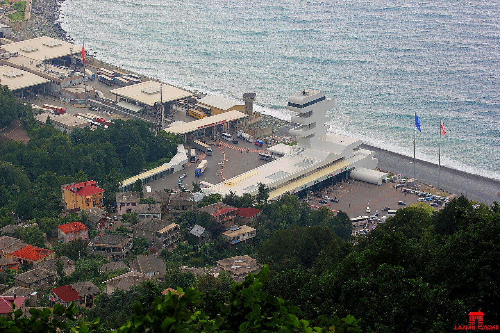
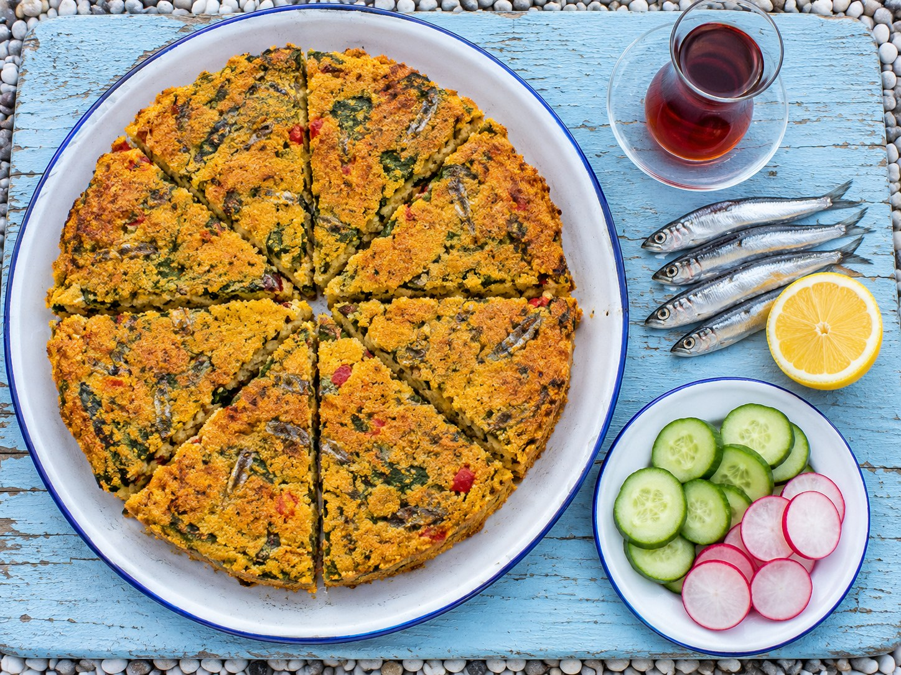

Ручей

Подержите банку, только наклоните, вот так, чтобы рассол стёк, а рыба осталась. Это хамса с той стороны, из Сарпа. Её солила моя троюродная сестра Седеф и прислала с внуком через пункт, в пакете из-под турецкого чая. Завтра они придут сами, все, человек двадцать, у моего внука свадьба. Им идти до нас десять минут, и ещё час стоять на пункте в очереди вместе с грузовиками. Раньше было наоборот: стоять было не надо, потому что идти было нельзя.
Я буду говорить по-русски, я его учила в школе, в Батуми, и потом в техникуме. Дома у нас говорят по-лазски. Лазский — родня мегрельскому, мегрел нас поймёт, если захочет, а грузин из Тбилиси не поймёт. Если я вдруг заругаюсь по-лазски, вы не обращайте внимания, это я не на вас, это на рыбу.
Дома меня зовут Назие, а в паспорте я Нана. Так у всех наших моего возраста. В сорок седьмом году вышел указ, что турецкие имена и фамилии больше нельзя, и людям велели выбрать новые. Бабушка рассказывала, что весь Сарпи две недели ходил по соседям советоваться, какую фамилию брать, как на базар за тканью. Кому нравилась фамилия соседа, тот её и брал. С тех пор у нас полсела однофамильцы, а родства никакого. Мне имя давали уже по новым правилам, в шестьдесят третьем, а дома всё равно звали по-старому. Так я и росла: в школе Нана, а за калиткой Назие. В детстве я думала, что это два разных человека и что Нана немножко умнее.
Вы видели ручей? Вон там, за домами, где будка. Это и есть граница. В двадцать первом году в Карсе подписали договор, кому какая земля, а через пять лет приехала комиссия и провела линию прямо по нашему ручью. Из этого ручья раньше брали воду все, и наши, и те. Половина села осталась здесь, половина там. У них теперь тоже Сарп, только без «и» на конце. Бабушка говорила, что «и» им при разделе не досталось.
Бабушку засватали оттуда в тридцать пятом году. Она была из Сарпа, а дед отсюда. Тогда ещё можно было ходить, давали такую бумагу, пасаван, на короткое время, к соседям. Её перевели через ручей в красном платке, с сундуком, и до её родного дома отсюда было ближе, чем до батумского базара. А через год пришли пограничники и закрыли совсем. Даже смотреть в ту сторону не разрешали. Бабушка мне объясняла: смотреть можно, только смотреть надо так, будто смотришь на море.
Хлеб с хамсой бабушка привезла оттуда в голове, вместе с сундуком. В Хопе, в Сарпе, у нас все пекут его по-своему, а бабушка пекла, как её мать. Хамса у нас была всегда. Зимой она подходит к берегу, наши мужчины её ловили, потом её стали брать в Батуми на рынке, а на лето солили в банки. Но у её матери было оливковое масло, а у нас в магазине только подсолнечное. И перцовой пасты не было, бабушка клала толчёный красный перец. Она всю жизнь говорила, что у неё получается «почти». Я спрашивала: почти как что? Она говорила: почти как там.
Говорили, что в горах, в Мачахели, где граница тоже разрезала ущелье, женщины писали письма на ту сторону старыми грузинскими буквами, которых пограничники не знали. Прочитают и сожгут, поэтому ни одного письма не осталось. Бабушка писать не умела вовсе, так что ей и сжигать было нечего. Вы пишете, чтобы осталось, а они писали, чтобы не осталось. Тоже работа.
Зимой пятьдесят второго года бабушкина мать умерла там, за ручьём. Никто нам об этом не сообщал, писем не было. Просто утром с той стороны закричали женщины. Бабушка стояла у плиты и узнала по голосу, чей это плач: её младшей сестры. У нас так все узнавали: кричат через долину, и ты сразу понимаешь, в каком доме горе. Бабушка к окну не пошла. Она дожарила хамсу, накормила деда и детей, а ночью сидела на кухне без света. Мама говорила, что в ту ночь бабушка пекла хлеб с хамсой, хотя никто его не просил, а утром отнесла соседям.
А когда в семьдесят четвёртом умер дед, они пришли на холм. На той стороне есть холм, его видно с нашего кладбища. Мы хоронили деда, а на холме стояли люди, маленькие, как пуговицы, и стояли всё время, пока мы были на кладбище. Никто им не махал, бабушка запретила: им за это могло быть плохо, там тоже смотрели. Мне было одиннадцать, и я их считала. Бабушка тоже считала. Вечером она сказала: «Одиннадцать». И потом всю жизнь, когда речь заходила о той стороне, говорила: «На холме их было одиннадцать». Будто это было письмо.
Тридцать первого августа восемьдесят восьмого года пункт открыли. Мне было двадцать пять, у меня уже был сын. Наши пошли туда с утра, как на праздник, в лучшем. Бабушке было за семьдесят, она шла медленно, а мы её не торопили, потому что, честно сказать, сами боялись. Пятьдесят с лишним лет человек живёт в двухстах метрах от своего дома, а теперь надо пройти эти двести метров. Пограничники, бумаги, очередь. А на той стороне тоже стояла толпа.
Бабушкина сестра Хатидже узнала её первой. Бабушка её не узнала: сестра стала полная, в очках, а в последний раз бабушка видела её девчонкой лет двенадцати. Хатидже обняла её и закричала так же, как кричала в пятьдесят втором, только теперь это было не горе. И вот что смешно: заговорили они по-лазски, и всё было понятно, только у Хатидже половина слов турецкие, а у бабушки половина грузинские и русские. Обе останавливались и переспрашивали. Пятьдесят лет один язык рос в две стороны, как дерево у забора.
Хатидже принесла банку солёной хамсы. Свежей в августе не бывает, хамса приходит зимой, а солёная стоит до лета. Вечером они вдвоём пекли хлеб у нас на кухне, и тут началось. Хатидже взяла наше подсолнечное масло, понюхала и поставила обратно. Бабушка открыла её перцовую пасту, понюхала и сказала, что это для турок. Хатидже сказала, что порей режут крупнее. Бабушка сказала, что режет так сорок лет и никто не умер. Испекли два противня, каждая свой. Вся семья ела оба и молчала, потому что стоило похвалить один, как вторая обижалась.
Так они и спорили до самого бабушкиного последнего лета. Хатидже стала приходить часто, и каждый раз они пекли два хлеба и ругались. Мама говорила, что они пятьдесят лет копили, о чём поспорить. Я думаю, они спорили, чтобы не плакать. Плакать при людях они обе не умели, этому их ручей научил.
А в девяностые у нас началось такое, что бабушка говорила: пятьдесят лет ждали, а теперь не знаем, куда их сажать. Через пункт пошли все. Челноки с клетчатыми сумками, туда пустые, оттуда полные: кожаные куртки, конфеты, ткани, всё турецкое. Хопа рядом, двадцать с небольшим километров, наши ездили туда, как в Батуми. Во дворах открылись обменники, в каждом доме сдавали комнату. Родня, которую полвека видели только с холма, ходила к нам по три раза в неделю, то на чай, то оставить сумки до утра. Бабушка ворчала, что раньше можно было хотя бы скучать спокойно. Но каждый раз ставила чайник.
А теперь через наш ручей ходят ваши, русские. Я вижу: приезжают на автобусе из Тбилиси, переходят на ту сторону, пьют там чай и через час идут обратно с новой печатью. Говорят, так надо, чтобы им можно было и дальше тут жить. Бабушка бы не поверила. Пятьдесят лет этот ручей никто не мог перейти, а теперь его переходят, чтобы тут же вернуться. Вы не обижайтесь, мне это даже нравится. Значит, ручей наконец работает в обе стороны.
Бабушка умерла в девяносто шестом. Хоронили здесь, на нашем кладбище. И на холм уже никто не пришёл: все пришли к нам, через пункт, и стояли у могилы рядом с нами, Хатидже держала меня за руку. Я посмотрела на холм. Он был пустой, и мне стало странно, будто чего-то не хватает. Хатидже потом сказала, что ей тоже.
Хатидже умерла через несколько лет. Теперь хамсу солит её внучка Седеф. Каждую осень она присылает мне банку, а я ей бутылку нашего подсолнечного масла. Это у нас такая шутка, на два дома. Её дети и мои внуки по-лазски понимают, но говорят по-турецки и по-грузински. Я с ними нарочно говорю по-лазски, чтобы им было на чём со мной спорить. Пусть спорят, бабушка бы одобрила.
Ну, давайте банку. Рыбу сейчас освободим от хребта, порежем. Лук, порей, мангольд, петрушку мелко, помидор без кожицы, и всё вместе с мукой, с маслом, с тёплой водой, руками, долго, пока не станет как глина у ручья. Масло какое? Сегодня оливковое, Седеф прислала. Завтра она придёт, попробует и скажет, что порей я опять режу мелко. А я скажу, что режу так сорок лет. И бабушка с Хатидже, где бы они ни были, наконец помолчат и послушают.

Хлеб с хамсой
На один противень, 6–8 порций.
Что нужно
солёная хамса — 300 г (филе)
кукурузная мука — 500 г
лук — 2 головки
лук-порей — 1 стебель
мангольд — 200 г
петрушка — пучок
красный стручковый перец — 1 шт.
помидоры — 2 шт.
оливковое масло — 100 мл и ещё для противня
сливочное масло — 50 г
перцовая паста — 1 ст. л.
тёплая вода — около 300 мл
соль — по вкусу, осторожно: хамса солёная
1. С хамсы снимите филе, уберите хребет. Если рыба очень солёная, подержите филе полчаса в холодной воде.
2. Помидоры обдайте кипятком и снимите кожицу.
3. Мелко порубите лук, порей, мангольд, петрушку, перец, помидоры и хамсу.
4. Добавьте оливковое и растопленное сливочное масло, перцовую пасту, кукурузную муку и тёплую воду. Хорошо вымесите руками. Попробуйте и только тогда досолите, если нужно.
5. Смажьте большой противень оливковым маслом и выложите массу кругом толщиной около 3 см.
6. Пеките при 180 °C около полутора часов, до плотной румяной корки.
7. Накройте противень и дайте хлебу постоять полчаса.
Хлеб с хамсой едят тёплым, сам по себе, а не как гарнир, с огурцом, редиской или луком. В холодильнике он держится день-два.
Тбилиси, ноябрь 2026